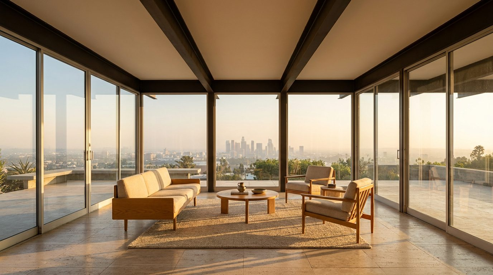

Atlante · INT-US-02 · Stati Uniti · USA
Casa mid-century sulle colline di Los Angeles
Esempi · esterno e interno


Perché funziona
A Los Angeles il mobile italiano si legge attraverso la lente mid-century: pochi pezzi, materia, luce radente. Il registro quiet è anche una scelta commerciale, perché il compratore californiano compra artigianato e materia percepita, non opulenza. Il set deve restare povero di oggetti: ogni aggiunta compete con il prodotto.
Architettura · elementi riproducibili
- travi in acciaio a vista, campata 4,5-6 m, profilo 20 cm
- vetrata a tutta altezza su tre lati, montanti verticali ogni 1,2 m
- sbalzo di 3 m sul pendio, nessun pilastro d'angolo
- pavimento in cemento levigato con riscaldamento radiante
- camino in blocchi di pietra a vista, 1,8 m di larghezza
- piscina a sfioro che chiude la vista, bordo a filo pavimento
- brise-soleil in doghe di legno sul lato ovest
- tenda in cotone oliva a tutta altezza su una sola campata
Verificato: Stahl House / Case Study House n. 22 (Pierre Koenig, completata nel 1960), 2.200 piedi quadrati, struttura in acciaio, sbalzo di 10 piedi sulla collina, pavimento in cemento con riscaldamento radiante, tetto piano, vetrate a tutta altezza su tre lati.
Verificato: il programma Case Study Houses, promosso dalla rivista Arts & Architecture, ha prodotto 36 progetti e 25 case costruite, concentrate nella California del Sud.
Valutazione: 2,6-3,0 m è il parametro di set; il tetto piano senza cornici abbassa la quota percepita rispetto alla misura reale.
Valutazione: la casa delle colline è trattata come tipo, non come replica di un progetto specifico.
Luce
Prompt di generazione (EN)
Editorial interior photograph of an empty mid-century hillside living room in Los Angeles, 2.7 m flat ceiling with exposed steel beams, floor-to-ceiling plate glass on three sides, polished concrete floor with a travertine hearth, one terracotta lime-plaster wall, oiled oak ceiling boards, a low built-in bench along the glass, late afternoon west light at 2900 K entering low across the room, long shadows toward camera, warm grade with desaturated greens, camera at 1.2 m, one-point perspective through the glass to a canyon and pool edge, 24 mm lens at f/8, no people, no text, no logos